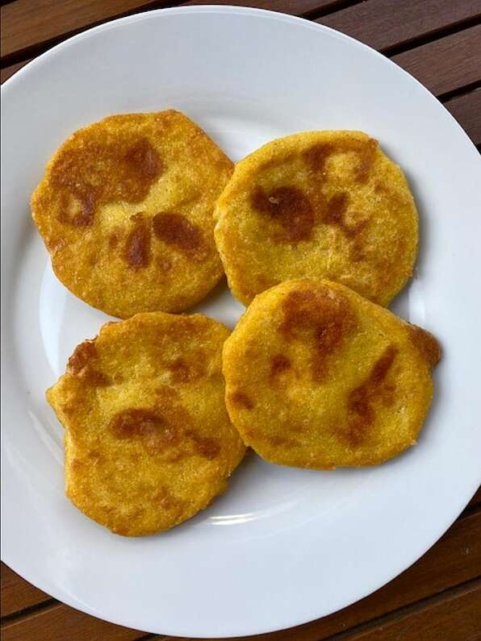

Arepas de Queso

Per Serving: 127 calories; protein 4.9g; carbohydrates 11.9g; fat 6.8g; cholesterol 10.2mg; sodium 306mg. Full Nutrition
These arepas have a crispy crust while the cheese inside stays melty and gives you
that cheese-pull that everyone knows and loves.
Ingredients
- 1 (8 ounce) package low-moisture mozzarella cheese
- 2 cups pre-cooked white cornmeal (such as P.A.N.®)/li>
- 2 ½ cups warm water
- 1 ½ teaspoons kosher salt, divided
- ¼ cup canola oil, divided
Directions
- Shred 3 ounces of the mozzarella and cut remaining 5 ounces into
1/2-inch cubes. Transfer shredded cheese to a large bowl and cubed cheese
to a medium bowl.
- Add cornmeal, 1 teaspoon salt, and warm water to the shredded cheese and
mix to combine. Set aside for 10 minutes to allow cornmeal to absorb liquid.
The mixture should resemble soft Play-Doh.
- Preheat the oven to 200 degrees F (95 degrees C).
- With damp palms and fingers, place 1/4 cup arepa mixture into your palm
and flatten into a 2 1/2-inch disk. Place 3 to 4 cubes of the mozzarella
into the center. Gently fold edges of dough over to cover mozzarella cubes
completely, patting to form a cake. Repeat until all dough and
cheese has been used.